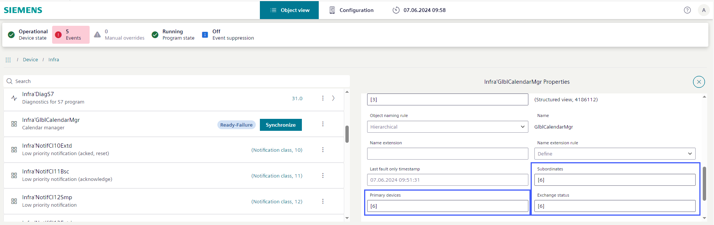
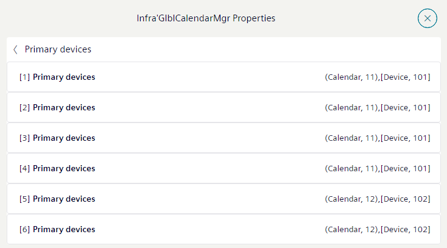
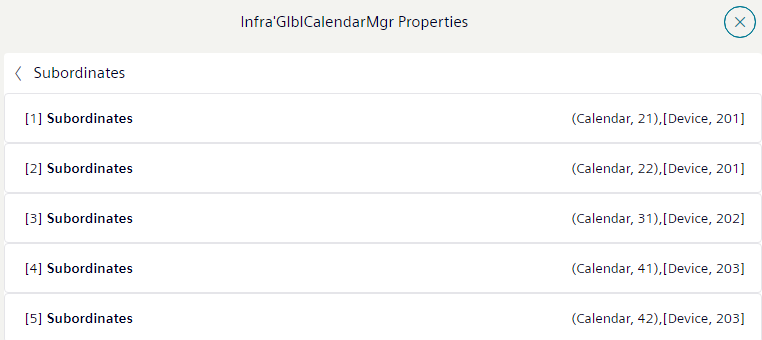

同步日历对象
为了在调试期间使全局日历更改与其他设备同步，必须执行手动同步。
Synchronize the calendar entries in the entire project.
- Connection to Web interface is established on the calendar manager device.
- The devices with subordinate calendars are online.
- Select Object view > Device > Infrastructure.
- Select Synchronize.
- Synchronization starts.
状态消息：
Ready-success: No synchronization is in progress. Either no synchronization has been triggered yet or last synchronization was completely successfulReady-failure:No synchronization is in progress. Synchronization has been triggered before and at least one calendar could not be synchronized. A new synchronization must be triggered by selecting Synchronize.Synchronize: Synchronization is currently in progress.
Verify the calendar manager entries
- Select Object view > Device > Infrastructure.
- Select Calendar manger and then
 .
. - The Calendar manger properties dialog opens.
- The Primary devices field shows how many primary calendars in the project are defined.
- The Subordinates field shows how many subordinate calendars have a reference to the primary calendars.
- The Exchange status shows how many changes are successfully synchronized.
- Select the Primary devices field for detail information.
- The Calendar manager properties sub-dialog opens.

- Select the Subordinates field for detail information.
- The Subordinates properties sub-dialog opens.
